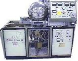

Thin Films
A
thin film,
as its name implies, is a layer with a
high
surface-to-volume ratio. Thin films are extensively used in wafer
fabrication, and can be a resistor, a conductor, an insulator, or even a
semiconductor. Thin films can be deposited on a substrate by
thermal
growing
or by
vapor deposition.
Thins
films behave
differently from
bulk materials of the same chemical
composition in several ways. For instance, thin films are
sensitive to surface properties while bulk materials generally
aren't. Thin films are also relatively more sensitive to thermomechanical stresses.
The integrity
of thin films is influenced by the quality of its
adhesion
to and conformal coverage of the underlying layer, residual or intrinsic
stresses
after deposition, and the presence of surface
imperfections
such as pinholes.
The
adhesion of a thin film to the substrate or underlying layer is of great
concern in ensuring the reliability of the thin film. A thin film
that is initially adhering to the underlying layer but lifts off after
the device is subjected to thermomechanical stresses can result in field
failures. Reliable thin film adhesion depends greatly on the
cleanliness
of the
surface upon which the film is deposited. Optimum substrate
roughness
also affects thin film adhesion. A very smooth substrate decreases
adhesion tendency. A very rough substrate on the other can result
in coating
defects,
which can also lead to thin film adhesion failures.
Regardless of
the deposition process, thin films always end up with an
intrinsic
stress
which can either be tensile or compressive. High residual stresses
can lead to adhesion problems, corrosion, cracking, and deviations in
electrical properties. Thus, proper deposition is critical to
minimize
intrinsic stresses in thin films.
|
 |
|
Fig.
1. Example of a Sputter Deposition System
for depositing
thin films
|
Wafer Fab
Links:
Incoming
Wafers;
Epitaxy;
Diffusion;
Ion
Implant;
Polysilicon;
Dielectric;
Lithography/Etch;
Thin
Films;
Metallization;
Glassivation;
Probe/Trim
See Also:
Barrier Layers;
IC
Manufacturing; Wafer Fab Equipment
HOME
Copyright
©
2001-2006
www.EESemi.com.
All Rights Reserved.